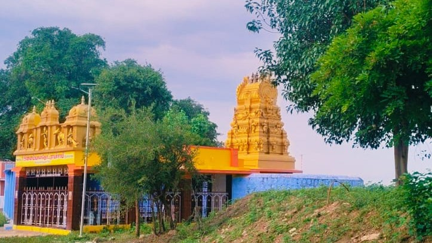

Panguni Uthiram
Panguni UthiramTEMPLE 01
Arulmigu Allal Kaththa Ayyanar Temple
One of the village's traditional places of worship, associated with the annual Panguni Uthiram celebration.
Tenkasi District · Tamil Nadu
எங்கள் ஊர் · எங்கள் பெருமை · எங்கள் பாரம்பரியம்
A village shaped by tradition, spirituality, agriculture and the strong bonds of its people.
OUR VILLAGE
Melanalandhula is a peaceful village in Nalandula Panchayat, Kuruvikulam Union, Thiruvengadam Taluk, Tenkasi District, Tamil Nadu.
Known for its culture, unity, agriculture and religious traditions, the village carries a history that is closely connected to its people and water heritage.
“மேலநாலந்துலா” என்ற பெயர், நான்கு பக்கங்களிலும் துலாக்கள் அமைந்திருந்த ஒரு தனித்துவமான கிணற்றுடன் தொடர்புடையதாகக் கருதப்படுகிறது.
SPIRITUAL HERITAGE
Places of devotion that remain an important part of village life and annual traditions.
Panguni UthiramTEMPLE 01
One of the village's traditional places of worship, associated with the annual Panguni Uthiram celebration.
 Chithirai
ChithiraiTEMPLE 02
A central place for the village's Chithirai festival and a strong part of local spiritual tradition.

MasiTEMPLE 03
Another important temple in the village, with a festival tradition observed during the Tamil month of Masi.
VILLAGE TRADITIONS
Celebrations are a time for devotion, family, community and shared memories.
TAMIL MONTH · CHITHIRAI
Arulmigu Puthamman Kaliyamman Temple's annual festival is one of the major celebrations associated with the village.
TAMIL MONTH · PANGUNI
Arulmigu Allal Kaththa Ayyanar Temple celebrates Panguni Uthiram with devotion and village participation.
TAMIL MONTH · MASI
Arulmigu Shri Onnammal Thottarayar Temple has its festival tradition during the Tamil month of Masi.
VISUAL STORIES
Explore the places and memories captured around Melanalandhula.

EDUCATION
Panchayat Union Middle School is located in Melanalandhula and serves students from the local community.
“கல்வியே நம் அடுத்த தலைமுறையின் அடித்தளம்.”
FIND US
Nalandula Panchayat · Kuruvikulam Union · Thiruvengadam Taluk · Tenkasi District · Tamil Nadu · 628552
STAY CONNECTED
For village updates, photos and community information, follow the official page.
◎ Melanalandhula_Official ↗